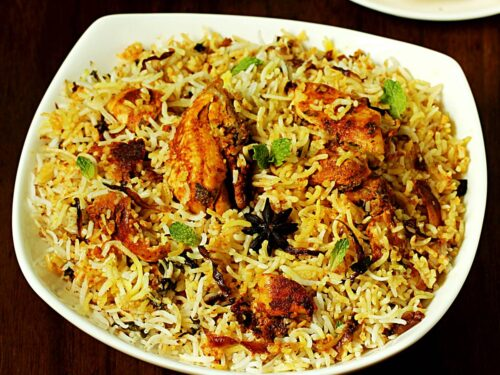

Famous Food
Andhra dosa
A crepe made with rice and urad dal, eaten with chutney and sambar
Chepa Pulusu

A thick, spicy gravy made with fish, cumin, poppy seeds, fenugreek, peppercorn, and mustard
Punugulu
A tea-time snack made with urad dal, onion, and spices, deep-fried until golden brown, and served with coconut and tomato chutney
Medu Vada

A doughnut-shaped dish made with urad dal, curry leaves, and spices, and is crunchy on the outside and sweet on the inside
Uppindi or Arisi Upma

A popular Rava Upma dish which is easy as well as fast to prepare
Hyderabadi Biryani
A rice preparation
Fish curry
A popular dish cooked with exotic spices
Idli
A healthy dish that is available at almost every street in Andhra Pradesh